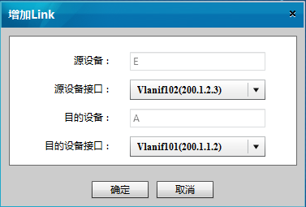
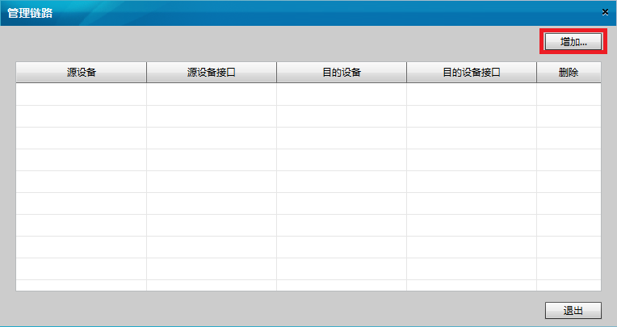

增加链路
操作步骤
操作方式一
在“Aglie TE View”页面选择“菜单 > Network > Add Link”。
在源设备上单击鼠标左键。
在目的设备上单击鼠标左键。
弹出“增加Link”对话框。通过下拉列表“源设备接口”和“目的设备接口”来选择此链路的两端接口。

选择完毕后，点击“确定”提交。
操作方式二
在“Aglie TE View”页面选择“菜单 > Network > 管理链路”。
弹出“管理链路”对话框，点击“增加”。

弹出“增加Link”对话框。请按照需求通过下拉列表“源设备”、“源设备接口”、“目的设备”和“目的设备接口”来选择此链路的两端的节点和接口。
选择完毕后，点击“确定”提交。
操作方式三
在“Aglie TE View”页面选择“菜单 > General > 链路发现”。
执行此步骤后，系统会自动进行链路发现并在屏幕上显示进度条。当进度条消失后，系统会将发现后的链路显示在拓扑图中。
父主题：
管理链路
华为专有和保密信息
版权所有 © 华为技术有限公司